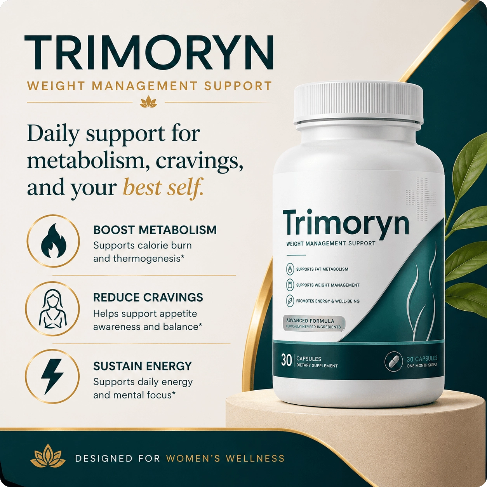
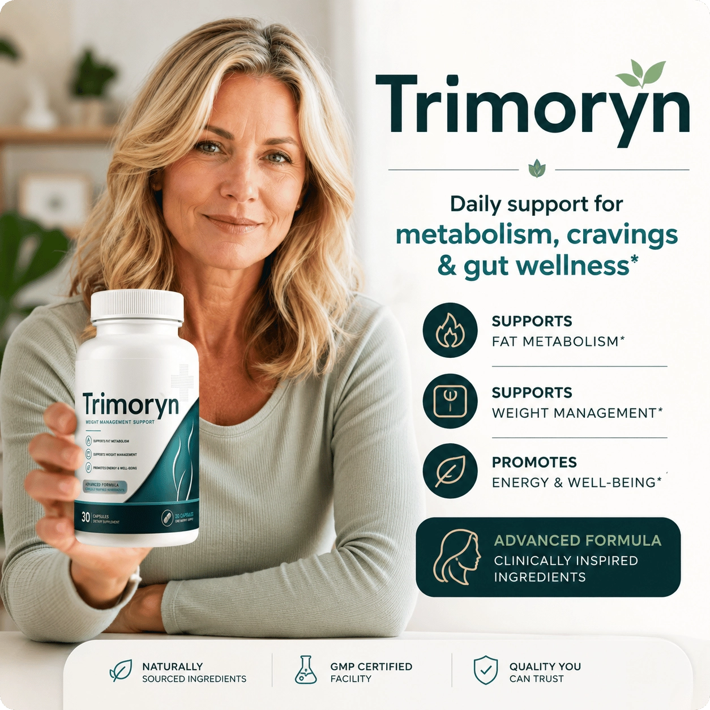
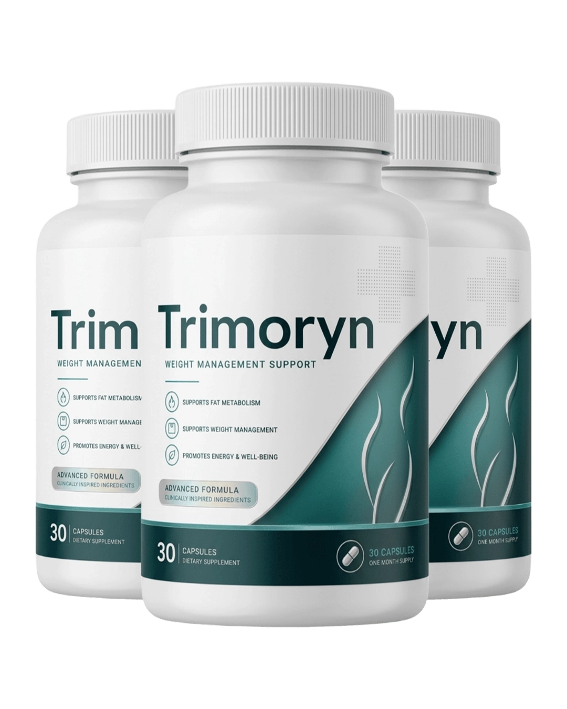
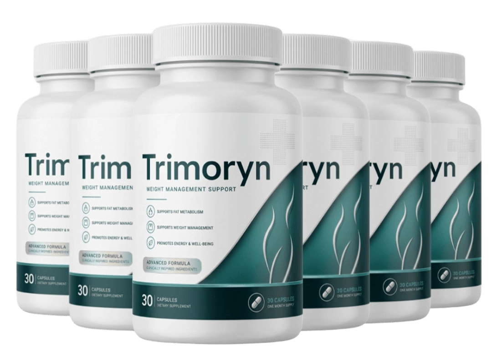

Trimoryn™ is a once-daily wellness capsule formulated to support healthy metabolism, appetite balance, gut health, and sustained energy—helping women over 40 achieve their weight management and wellness goals naturally.
After 40, your body starts playing by new rules. Cravings creep in, energy dips earlier, and the habits that once worked just stop. Trimoryn was built for this moment — a gentle daily supplement that supports your body's natural rhythm instead of forcing it.
Built around six clinically researched ingredients — including Berberine HCL, Konjac Fiber, and Akkermansia Muciniphila — Trimoryn delivers metabolism, appetite, and gut wellness support in one simple capsule. Made in an FDA registered facility and backed by a 60-day guarantee.
✔ Supports healthy daily metabolism after 40
✔ Helps balance appetite and curb everyday cravings
✔ Promotes gut microbial wellness with researched probiotics
✔ Encourages steady, jitter-free energy throughout the day
✔ Once-daily capsule

Trimoryn was built around the way a woman's body actually shifts after 40 — and that focus shows up in every detail.
👩 Made for women over 40: Built around the real metabolic, hormonal, and gut shifts women face after 40 — not a generic adult formula.
🌿 Gentle, stimulant-free support: Steady daily metabolism and energy support without caffeine, jitters, or 3 p.m. crashes.
🔬 Six clinically researched ingredients: Every ingredient — from Berberine HCL to Akkermansia Muciniphila — is backed by published human research.
🦠 Gut-first approach: Probiotic strains like Akkermansia Muciniphila and Bifidobacterium Breve help support the microbial balance that quietly shapes midlife metabolism.
🛡️ Made in the USA, backed by 60 days: Produced in an FDA registered facility under GMP guidelines and protected by a 60-day money-back guarantee.
"Finally feels like my metabolism is on my side again"
I've tried more supplements than I can count since hitting 45. Trimoryn is the first one that didn't leave me feeling wired or anxious. After about six weeks, my afternoon energy stopped crashing and my clothes started fitting differently. One capsule a day — that's it.
"The cravings are finally manageable"
Late-night snacking was my biggest weakness. Within a month of starting Trimoryn, those cravings just quietly faded. I'm not white-knuckling through anything — it just feels easier. Highly recommend for any woman over 50 who's tried everything else.
"Steady energy without the jitters"
I can't tolerate caffeine-based fat burners — they wreck my sleep. Trimoryn gives me calm, steady energy through the entire day, no crashes, no anxiety. My appetite has settled into a normal rhythm too. Two bottles in and very happy.
👉 94% of customers choose the 6-bottle package for the best long-term results

A Daily Wellness Supplement Built for Women Over 40
Trimoryn is a once-daily metabolism, appetite, and gut wellness supplement formulated for women over 40. It blends six research-backed ingredients — Berberine HCL, Cinnamon Bark Extract, Konjac Fiber, Akkermansia Muciniphila, Bifidobacterium Breve, and Alpha Lipoic Acid — into a single capsule that supports healthy metabolic function, balanced cravings, and steady daily energy, without stimulants or harsh thermogenics.
A Gentler Approach to Midlife Metabolic Support
Unlike typical fat burners built around caffeine spikes and appetite suppressants, Trimoryn takes a gut-first approach to daily wellness for women navigating midlife. The formula targets the three areas that quietly shift after 40 — metabolic rate, hunger signaling, and gut microbial balance — using ingredients with peer-reviewed human research behind each one. The result is steady, sustainable support, not a stimulant-driven rush.
Who Trimoryn Was Designed For
Trimoryn was created for the woman who eats well, stays reasonably active, yet feels her metabolism no longer responds the way it used to. It fits women who want simple once-daily metabolism and appetite support, prefer ingredients with published clinical research, and value the reassurance of a 60-day satisfaction guarantee before committing fully to a new wellness routine.
Why Trimoryn Belongs in Your Daily Routine
Made in an FDA registered facility under strict GMP guidelines, Trimoryn delivers metabolism, appetite, and gut wellness support in one easy capsule a day. It isn't an aggressive diet pill — it's a daily companion designed to work with the natural changes happening after 40, gently supporting the systems that shape how confident, energized, and balanced you feel each day.
Trimoryn works through six connected pathways that quietly shift in women over 40 — gently restoring the natural balance your body once managed on its own. Here's how it supports you, step by step.
🌅 Step 1 — Daily Activation: Once taken, the ingredients inside your daily Trimoryn capsule are absorbed into the body and begin working across three core systems: metabolism, appetite, and gut wellness.
🔥 Step 2 — Metabolic Support: Berberine HCL and Cinnamon Bark Extract work together to support healthy glucose metabolism, insulin sensitivity, and the body's natural fat-handling pathways — the same systems that quietly slow after 40.
🍽️ Step 3 — Appetite & Craving Balance: Konjac Fiber (Glucomannan) gently expands in the stomach to promote a natural feeling of fullness, helping curb hunger signals and reduce the urge to overeat between meals.
🦠 Step 4 — Gut Microbial Renewal: Akkermansia Muciniphila and Bifidobacterium Breve — two of the most researched probiotic strains in midlife metabolism science — help support a healthy gut lining and the microbial balance that drives appetite, energy, and metabolic signaling.
⚡ Step 5 — Cellular Energy & Antioxidant Defense: Alpha Lipoic Acid works quietly across every system, supporting healthy cellular energy production and protecting metabolic tissues from everyday oxidative stress.
💪 Step 6 — Long-Term Daily Wellness: Taken consistently, Trimoryn supports the cumulative balance of metabolism, appetite, and gut health — helping women over 40 feel steadier, lighter, and more in control of their daily wellness.
Pregnant or breastfeeding women — Trimoryn is not recommended during pregnancy or breastfeeding.
Anyone under 18 — Trimoryn is formulated for women over 40, not children or young adults.
People on diabetes medications — Berberine and Cinnamon can lower blood sugar; speak with your doctor before combining.
People on blood thinners, cyclosporine, or statins — Berberine HCL may interact with these medications; check with your prescribing physician.
People with severe digestive conditions — Konjac Fiber may not be appropriate if you have a history of bowel obstruction or swallowing difficulties.
Immunocompromised individuals — probiotics may not be advised during cancer treatment, post-transplant recovery, or with severely weakened immunity.
Anyone allergic to the ingredients — avoid Trimoryn if you've previously reacted to Berberine, Cinnamon, Glucomannan, Alpha Lipoic Acid, or any probiotic strain.
The supplement aisle is crowded but Trimoryn doesn't follow the same blueprint as most metabolism products. Here's what sets it apart.
🌿 No stimulants, ever: While most metabolism supplements rely on caffeine or harsh thermogenics, Trimoryn supports metabolism gently — no jitters, no crashes, no anxious edge.
👩🦳 Built specifically for women over 40: Most fat burners are designed for younger bodies. Trimoryn is formulated around the real metabolic, hormonal, and gut shifts that begin in midlife.
🦠 A true gut-first methodology: Where competitors focus only on metabolism or appetite, Trimoryn includes Akkermansia Muciniphila — one of the most researched probiotic strains in midlife metabolic science, rarely found in mainstream formulas.
🔬 Fully disclosed ingredients: No proprietary blends, no hidden dosages. Every ingredient inside Trimoryn has peer-reviewed human research behind it.
💊 One simple capsule a day: No powders, no stacks, no twice-daily timing — full daily support in a single easy-to-take capsule.
🛡️ 60-day money-back guarantee: Most supplements offer 14 days or no refund at all. Trimoryn gives you a full 60 days to decide.
🏭 Made in the USA: Produced in an FDA registered facility under strict GMP guidelines — quality control many online supplement brands quietly skip.
Supports:
Supports:
Supports:
Supports:
Supports:
Supports:
Every bottle of Trimoryn is backed by our Iron-Clad 60-Day Money-Back Guarantee — giving you a full two months to experience the difference in your metabolism, appetite, and daily wellness, completely risk-free. If you're not 100% satisfied for any reason, simply contact our customer support team within 60 days and we'll issue a full, hassle-free refund — no questions asked, no fine print, no complicated forms.
Trimoryn is a once-daily metabolism, appetite, and gut wellness supplement formulated specifically for women over 40, built on six research-backed ingredients including Berberine HCL, Konjac Fiber, and Akkermansia Muciniphila.
Women over 40 who feel their metabolism, appetite, or energy isn't responding the way it used to — and prefer gentle, non-stimulant, gut-first wellness support.
It works through three pathways — supporting metabolism (Berberine HCL + Cinnamon Bark), balancing appetite (Konjac Fiber), and restoring gut wellness (Akkermansia + Bifidobacterium Breve), with Alpha Lipoic Acid supporting cellular energy across all three.
Take one capsule daily with a full glass of water, ideally with breakfast. Consistency at the same time each day delivers the best results.
Most women notice appetite and digestion changes in 2–4 weeks, with more visible metabolic and energy benefits between weeks 6 and 12.
No. Trimoryn is 100% stimulant-free — no caffeine, no thermogenics, no jitters.
Trimoryn uses gentle, well-studied ingredients. Some users may experience mild digestive adjustment in the first week. Consult your doctor if you have a medical condition.
Always check with your doctor first. Berberine may interact with diabetes, blood thinner, cyclosporine, and statin medications. Take Konjac Fiber at least one hour apart from any oral medication.
Yes — manufactured in the USA in an FDA registered facility under strict GMP guidelines.
Dietary supplements aren't FDA approved — that designation only applies to drugs. Trimoryn is produced in an FDA registered facility under GMP guidelines, the supplement industry's gold standard.
Every Trimoryn bottle is backed by a 60-day money-back guarantee — full, hassle-free refund if you're not satisfied.
Only through the official Trimoryn website — not on Amazon, eBay, Walmart, or in retail stores.

Only for: $49/per bottle
🔒 60-Day Money-Back Guarantee • 🚚 Free Shipping on 6-Bottle Pack • 🏭 Made in an FDA Registered Facility
Peer-reviewed research supporting the six ingredients inside Trimoryn.
Privacy Policy | Disclaimer | Terms
© Copyright 2026 Trimoryn. All Rights Reserved.